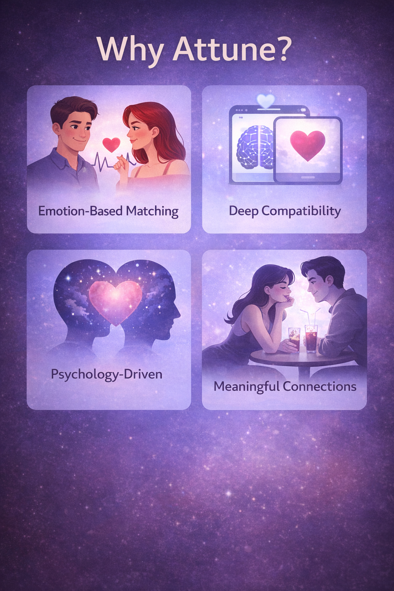

```
Anything inside `` must be CSS only. Because of that, the browser will stop parsing that section properly.
Second, in the actual `` you still have the old placeholder version, not the `
` version. So even if the CSS were fixed, your page is still rendering the placeholder.
Use this fix.
In your `